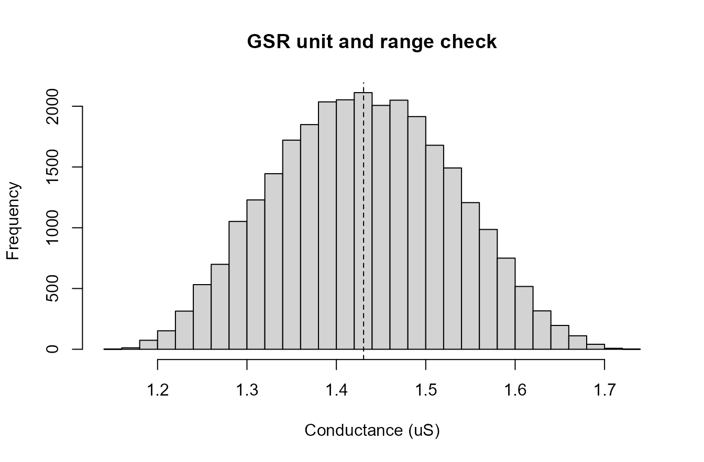
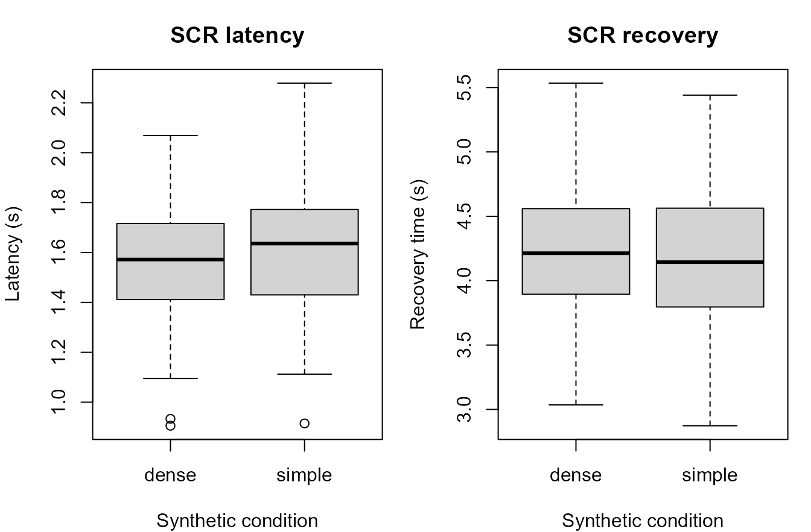
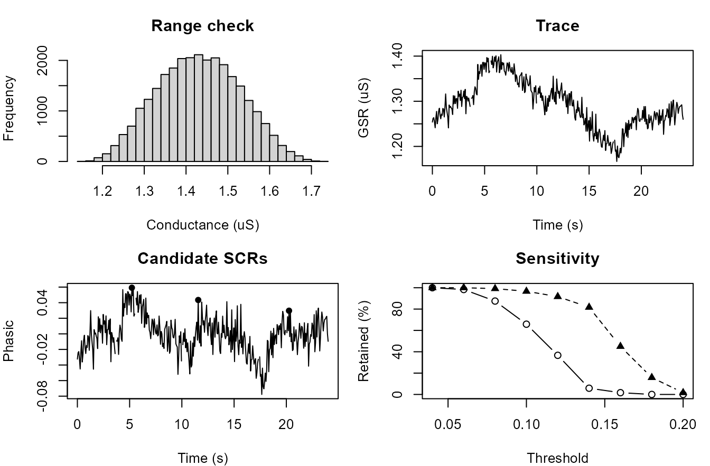

EDA and SCR visual diagnostics
Source:vignettes/articles/eda-scr-visual-diagnostics.Rmd
eda-scr-visual-diagnostics.RmdPurpose
This article demonstrates a plot-rich visual diagnostics workflow for
electrodermal activity (EDA), galvanic skin response (GSR), and
candidate skin conductance responses (SCRs) in gpbiometrics
projects.
The workflow is intentionally diagnostic. The figures show signal continuity, unit/range checks, tonic-phasic separation, candidate event marking, response-window summaries, threshold sensitivity, and compact report-style displays. They should not be interpreted as direct evidence of emotion, stress, attention, workload, health status, clinical state, diagnosis, or psychological response.
Synthetic EDA/GSR stream
The example uses synthetic data so that the article is reproducible and does not depend on private recordings.
alpha_scr <- function(time_s, onset_s, amplitude, rise = 1.1, decay = 3.4) {
x <- pmax(0, time_s - onset_s)
response <- amplitude * (exp(-x / decay) - exp(-x / rise))
response[x <= 0] <- 0
response
}
participants <- sprintf("P%02d", 1:8)
trials <- seq_len(10)
samples_per_trial <- 360
time_s <- seq(0, 24, length.out = samples_per_trial)
trial_grid <- expand.grid(
participant_id = participants,
trial_id = trials,
KEEP.OUT.ATTRS = FALSE,
stringsAsFactors = FALSE
)
make_trial <- function(participant_id, trial_id) {
condition <- ifelse(trial_id %% 2 == 0, "dense", "simple")
participant_shift <- match(participant_id, participants) / 30
trial_shift <- trial_id / 120
tonic <- 1.2 + participant_shift + trial_shift + 0.08 * sin(2 * pi * time_s / 24)
event_onsets <- c(4, 11, 18)
amplitude_base <- ifelse(condition == "dense", 0.16, 0.11)
amplitudes <- amplitude_base + rnorm(length(event_onsets), 0, 0.015)
phasic <- Reduce(`+`, Map(function(onset, amp) alpha_scr(time_s, onset, amp), event_onsets, amplitudes))
gsr_us <- tonic + phasic + rnorm(length(time_s), 0, 0.015)
missing <- runif(length(time_s)) < ifelse(condition == "dense", 0.012, 0.007)
gsr_us[missing] <- NA_real_
data.frame(
participant_id = participant_id,
trial_id = trial_id,
condition = condition,
time_s = time_s,
gsr_us = gsr_us,
tonic_true = tonic,
phasic_true = phasic,
stringsAsFactors = FALSE
)
}
eda <- do.call(
rbind,
Map(make_trial, trial_grid$participant_id, trial_grid$trial_id)
)
head(eda)
#> participant_id trial_id condition time_s gsr_us tonic_true
#> P01.1 P01 1 simple 0.00000000 1.237740 1.241667
#> P01.2 P01 1 simple 0.06685237 1.227188 1.243067
#> P01.3 P01 1 simple 0.13370474 1.227325 1.244466
#> P01.4 P01 1 simple 0.20055710 1.249163 1.245865
#> P01.5 P01 1 simple 0.26740947 1.244250 1.247263
#> P01.6 P01 1 simple 0.33426184 1.222970 1.248658
#> phasic_true
#> P01.1 0
#> P01.2 0
#> P01.3 0
#> P01.4 0
#> P01.5 0
#> P01.6 0GSR signal trace
A single-trial trace is useful for checking continuity, missing stretches, range, and gross artifacts before event extraction.
one_trial <- eda[eda$participant_id == "P01" & eda$trial_id == 2, ]
plot(
one_trial$time_s,
one_trial$gsr_us,
type = "l",
xlab = "Time (s)",
ylab = "Conductance (uS)",
main = "GSR signal trace"
)Synthetic GSR trace for one participant-trial segment.
Unit and range check
A range plot helps identify unusual scaling or unit-conversion problems. This is a technical plausibility check, not a substantive result.
hist(
eda$gsr_us,
breaks = 30,
xlab = "Conductance (uS)",
main = "GSR unit and range check"
)
abline(v = median(eda$gsr_us, na.rm = TRUE), lty = 2)
Synthetic GSR conductance range check.
Tonic-phasic decomposition
The example below uses a simple moving-average decomposition for visualization. In formal workflows, the decomposition method and parameters should be documented.
smooth_tonic <- stats::filter(one_trial$gsr_us, rep(1 / 51, 51), sides = 2)
smooth_tonic <- as.numeric(smooth_tonic)
smooth_tonic[is.na(smooth_tonic)] <- approx(
x = which(!is.na(smooth_tonic)),
y = smooth_tonic[!is.na(smooth_tonic)],
xout = which(is.na(smooth_tonic)),
rule = 2
)$y
phasic_est <- one_trial$gsr_us - smooth_tonic
op <- par(mfrow = c(2, 1), mar = c(3.5, 4, 2.5, 1))
plot(one_trial$time_s, one_trial$gsr_us, type = "l", xlab = "Time (s)", ylab = "GSR (uS)", main = "Observed GSR and tonic estimate")
lines(one_trial$time_s, smooth_tonic, lty = 2)
plot(one_trial$time_s, phasic_est, type = "l", xlab = "Time (s)", ylab = "Phasic estimate", main = "Estimated phasic component")
abline(h = 0, lty = 2)Synthetic tonic-phasic decomposition display.
par(op)Candidate SCR event markers
Candidate event markers document the detection rule and provide a visual audit trail for later review.
event_onsets <- c(4, 11, 18)
candidate_events <- do.call(
rbind,
lapply(event_onsets, function(onset) {
idx <- which(one_trial$time_s >= onset & one_trial$time_s <= onset + 5)
peak_idx <- idx[which.max(phasic_est[idx])]
data.frame(
onset_s = onset,
peak_s = one_trial$time_s[peak_idx],
amplitude = phasic_est[peak_idx],
stringsAsFactors = FALSE
)
})
)
candidate_events$latency_s <- candidate_events$peak_s - candidate_events$onset_s
plot(
one_trial$time_s,
phasic_est,
type = "l",
xlab = "Time (s)",
ylab = "Phasic estimate",
main = "Candidate SCR events"
)
abline(h = 0, lty = 2)
abline(v = candidate_events$onset_s, lty = 3)
points(candidate_events$peak_s, candidate_events$amplitude, pch = 16)
text(candidate_events$peak_s, candidate_events$amplitude, labels = seq_len(nrow(candidate_events)), pos = 3)Synthetic candidate SCR event markers.
candidate_events
#> onset_s peak_s amplitude latency_s
#> 1 4 5.214485 0.05919195 1.2144847
#> 2 11 11.565460 0.04345445 0.5654596
#> 3 18 20.256267 0.02969727 2.2562674Latency and recovery summaries
Latency and recovery summaries are useful for checking event-window extraction. They should be reported as algorithmic summaries unless the study design supports stronger inference.
event_summary <- do.call(
rbind,
lapply(seq_len(nrow(trial_grid)), function(i) {
condition <- ifelse(trial_grid$trial_id[i] %% 2 == 0, "dense", "simple")
amplitude_base <- ifelse(condition == "dense", 0.16, 0.11)
data.frame(
participant_id = trial_grid$participant_id[i],
trial_id = trial_grid$trial_id[i],
condition = condition,
event = seq_along(event_onsets),
onset_s = event_onsets,
amplitude = pmax(0.02, amplitude_base + rnorm(length(event_onsets), 0, 0.025)),
latency_s = pmax(0.4, 1.6 + rnorm(length(event_onsets), 0, 0.25)),
recovery_s = pmax(1.0, 4.2 + rnorm(length(event_onsets), 0, 0.55)),
stringsAsFactors = FALSE
)
})
)
op <- par(mfrow = c(1, 2), mar = c(4, 4, 3, 1))
boxplot(latency_s ~ condition, data = event_summary, xlab = "Synthetic condition", ylab = "Latency (s)", main = "SCR latency")
boxplot(recovery_s ~ condition, data = event_summary, xlab = "Synthetic condition", ylab = "Recovery time (s)", main = "SCR recovery")
Synthetic SCR latency and recovery summaries.
par(op)Threshold sensitivity
Threshold sensitivity plots show how candidate-response counts change when the amplitude threshold changes.
thresholds <- seq(0.04, 0.20, by = 0.02)
sens <- do.call(
rbind,
lapply(thresholds, function(th) {
aggregate(
event_summary$amplitude >= th,
by = list(condition = event_summary$condition),
FUN = mean
) |>
transform(threshold = th)
})
)
names(sens)[2] <- "detection_rate"
simple <- sens[sens$condition == "simple", ]
dense <- sens[sens$condition == "dense", ]
plot(
simple$threshold,
simple$detection_rate * 100,
type = "b",
ylim = c(0, 100),
xlab = "Amplitude threshold",
ylab = "Candidate events retained (%)",
main = "SCR threshold sensitivity"
)
lines(dense$threshold, dense$detection_rate * 100, type = "b", pch = 17, lty = 2)
legend("topright", legend = c("simple", "dense"), lty = c(1, 2), pch = c(1, 17), bty = "n")Synthetic SCR threshold sensitivity display.
Compact EDA/SCR visual diagnostics dashboard
A compact dashboard can combine range, signal, event, and threshold diagnostics for review or supplementary reporting.
op <- par(mfrow = c(2, 2), mar = c(4, 4, 3, 1))
hist(eda$gsr_us, breaks = 25, xlab = "Conductance (uS)", main = "Range check")
plot(one_trial$time_s, one_trial$gsr_us, type = "l", xlab = "Time (s)", ylab = "GSR (uS)", main = "Trace")
plot(one_trial$time_s, phasic_est, type = "l", xlab = "Time (s)", ylab = "Phasic", main = "Candidate SCRs")
points(candidate_events$peak_s, candidate_events$amplitude, pch = 16)
plot(simple$threshold, simple$detection_rate * 100, type = "b", ylim = c(0, 100), xlab = "Threshold", ylab = "Retained (%)", main = "Sensitivity")
lines(dense$threshold, dense$detection_rate * 100, type = "b", pch = 17, lty = 2)
Compact synthetic EDA/SCR visual diagnostics dashboard.
par(op)Relation to gpbiometrics helpers
The same reporting pattern can be paired with package-level helpers when project data use the expected column contracts.
| task | representative_helpers |
|---|---|
| GSR unit audit | audit_gazepoint_gsr_units(); convert_gazepoint_gsr_to_conductance() |
| EDA decomposition | decompose_gazepoint_eda(); plot_gazepoint_eda_decomposition() |
| SCR event detection | detect_gazepoint_scr_events(); detect_gazepoint_scr_peaks(); plot_gazepoint_scr_events() |
| Latency and recovery summaries | compute_gazepoint_scr_latency(); extract_gazepoint_scr_recovery_times() |
| Threshold sensitivity | run_gazepoint_scr_threshold_sensitivity(); plot_gazepoint_scr_specification_curve() |
| Report outputs | create_gazepoint_qc_supplement(); create_gazepoint_biometrics_report_tables() |
library(gpbiometrics)
gsr_units <- audit_gazepoint_gsr_units(
biometric_data,
gsr_col = "GSR"
)
eda_conductance <- convert_gazepoint_gsr_to_conductance(
biometric_data,
gsr_col = "GSR",
output_col = "GSR_US"
)
eda_decomp <- decompose_gazepoint_eda(
eda_conductance,
eda_col = "GSR_US",
time_col = "TIME_MS",
participant_col = "participant_id",
trial_col = "trial_id"
)
scr_events <- detect_gazepoint_scr_events(
eda_decomp,
phasic_col = "eda_phasic",
time_col = "TIME_MS",
participant_col = "participant_id",
trial_col = "trial_id"
)
plot_gazepoint_eda_decomposition(eda_decomp)
plot_gazepoint_scr_events(eda_decomp, events = scr_events)Reporting recommendation
For manuscripts, technical supplements, and reviewer-facing reports, describe these figures as EDA/GSR/SCR diagnostics, signal-processing checks, event-detection displays, threshold-sensitivity checks, and reproducibility outputs. Avoid stronger psychological, clinical, affective, workload-related, or stress-related interpretation unless supported by validation, controls, and modelling evidence.